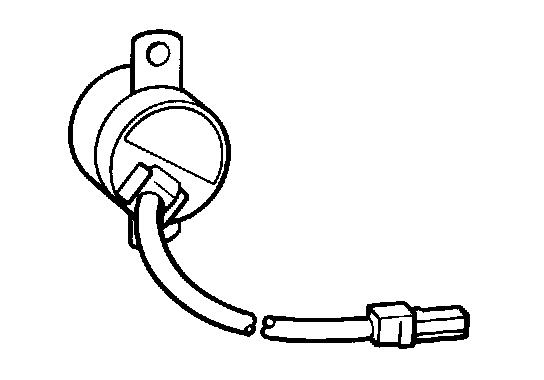
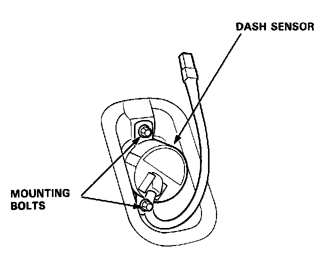

Sensor Inspection
Sensor Inspection
CAUTION: Take extra care when painting or doing body work on any part of the dashboard lower panel. Avoid direct exposure of the sensors or wiring to heat guns, welding or spraying equipment.
WARNING:
- Disconnect both the negative and positive battery cables.
- Install the short connectors before working around the dashboard lower panel or the SRS sensors.
- After any degree of frontal body damage, inspect both dash sensors. Replace a sensor if there are any signs of dents, cracks or deformation.

- Be sure the sensors are installed securely.
